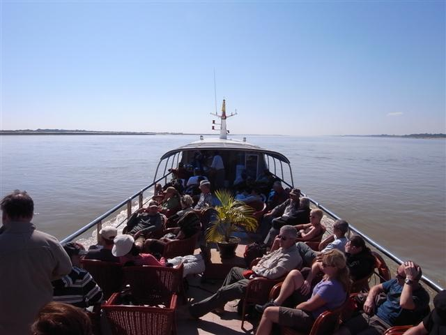

～不喜好 ACG 的日本人～
由 Mandalay 開往 Bagan 的「快船」六時起航，五時便要離開旅館，旅館職員給我安排了的士，又給我打包了早餐，三塊麵包一條香蕉。
準時到達，把行李「寄存」，進入船艙找安排好的座位，不知為何，地板濕濕的，我的座位在船頭一個小艙中，感覺很局促，我連忙走上頂層露天的地方，看來大部分人都不喜歡室內，那裏早已坐滿了人。幸好我還是找到一個坐位，隔籬坐著的是一位日本人，姓渡邊。
天還未亮，還看得見星星，風不斷吹，冷得發抖，好不容易到六時，天開始光，船也開移動。
選擇乘這船，主要因為不想幫襯國營巴士，其次是以為乘船觀看沿河風光很寫意，但老實說，這一程船，竟然比預期的六小時用多了三小時，下午三時才到 Bagan，而且沿路沒什麼好看，一兩小時還可以，九小時...... 真是幾難頂。
這船一個座位要 36 美元，有咖啡和茶不斷供應。航行不久人們就湧到水吧拿啡取餅，渡邊君替我拿了咖啡和豬仔包，這麼冷有一杯熱飲真是不同。露天雅座，隨著太陽越掛越高，遊客紛紛移動座位背向陽光，又曬又大風，就這樣子過了不知多少個小時。
渡邊君給我他的名片，他在 JR 做工，這個日本人，竟然 ACG 一樣也不碰，當我說我小時候看的日本漫畫和卡通，以及電玩如任天堂世嘉等，他竟皺起眉來說其實他沒有怎樣看過和玩過，動漫，要和他說到《City Hunter》他才認識，更別說電玩。
他用的是日本人常用的《地球の歩き方》，他分享行程時，很好人地把幾頁關於 Sittwe 和 Mrauk U 的章節撕了給我。
途中，船在一些地方上落客，船一靠岸，岸上一些人就用頭頂頂著一些物資如香蕉等食物走到水中，大聲問船上的人要不要買，要的話，他們就很有眼界地把蕉掟到船上的客人。
在這條像黃河般的 Ayeyarwady River 上航行，行得不快，好像在選道而行似的，每到一個彎位，船都再駛慢一點，成功轉向才再駛快一點。途中經過一些興建中的穚。
漸漸地，看到岸上有零散的古蹟，知道已經到達 Bagan，船泊岸後，預訂了的 Inn Wa Guest House 的人接我，渡邊君的酒店竟然沒有接送服務，Inn Wa 的人便收錢順路載他去酒店。
進入 Bagan 要付十美元費用，不過有個西人竟被人索取 10000 Kyat。
Inn Wa Guest House 雖然便宜但基本所需齊全。安頓好便在附近走走，臨急臨忙買了一對人字拖，有了這人字拖，之後方便得多，我實在買得太遲。
Bagan 又比我預期的不同，旅遊書中的地圖，很少食店和旅館資料，我以為很荒蕪，但原來滿街都是店，頗熱鬧。在街上見到一間「7-11」，其實是網吧，我入去上網，很慢和不能去很多的免費電郵，還是 Google 好。
不過有兩位燥狂的德國人好像沒得上網會死的樣子，很激動地問究竟何時才會快一點，說現在根本慢到用不了，職員說早上八時應該會快點，兩位仁兄便說明早會準時來，一副「明天若再上不到網就有你好看」的神態。
我懷疑近年 Bagan 有很多很多的意大利遊客，所以有很多餐廳標明有意大利菜，又不知何解很想吃意粉，便去了一間有意粉的室外餐廳吃。
臨走結帳，駭然見到檯角上有一隻疑似小強物蠢蠢欲動，我全身停頓，目不轉睛地望著牠等待找錢，侍應生走來，看著我看著檯角，我極速把錢拿起離開，期間我們默不作聲。


Nyaung U
Inn Wa Guest House